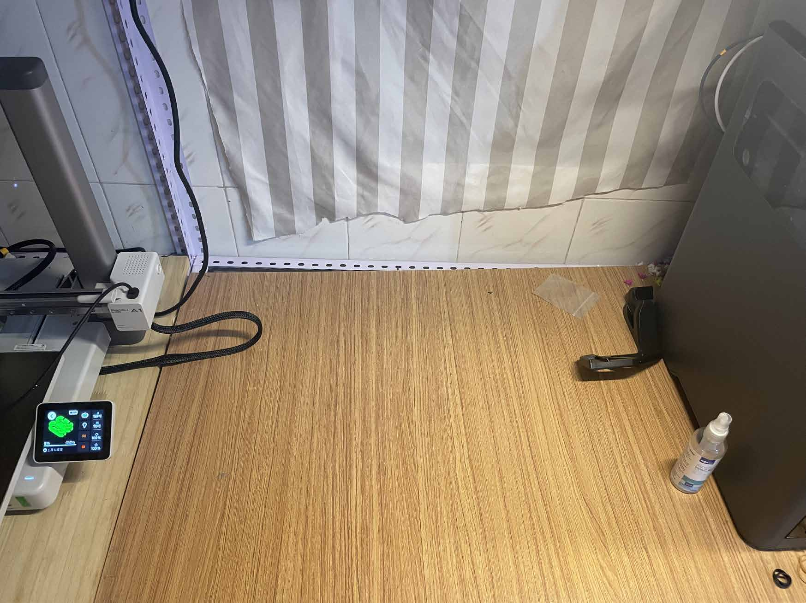
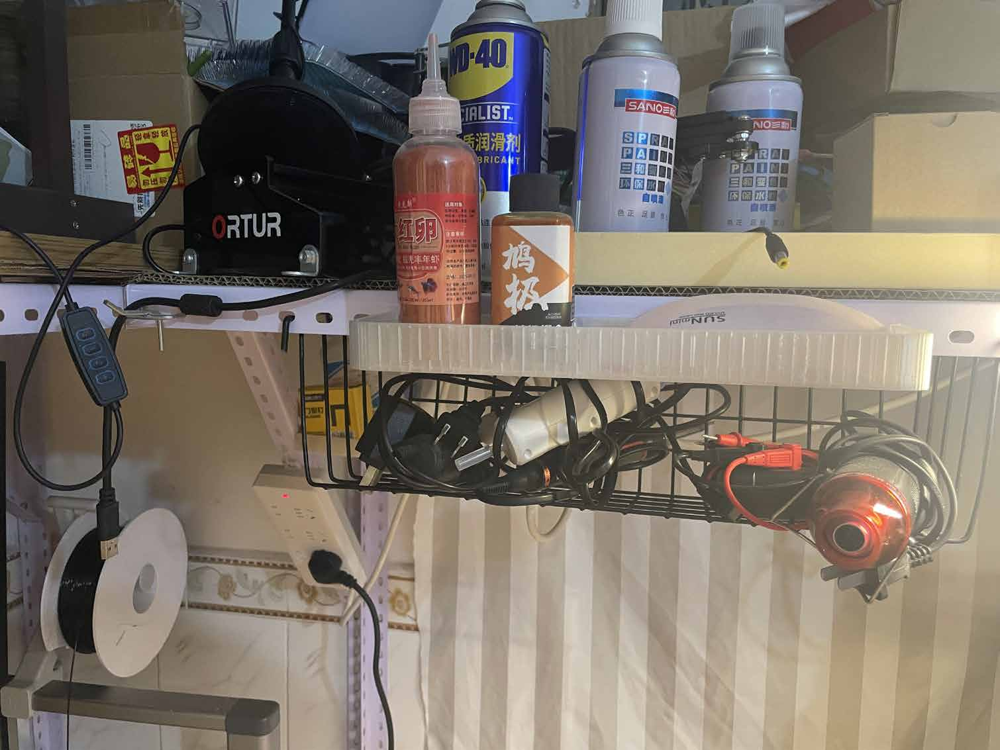
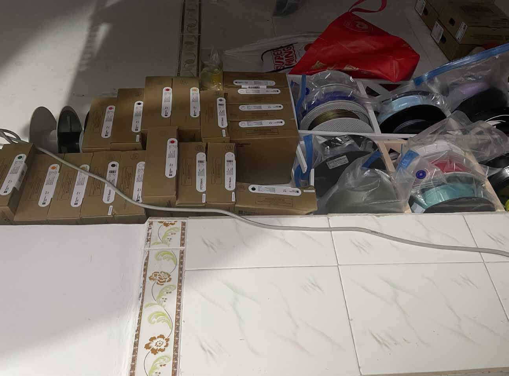
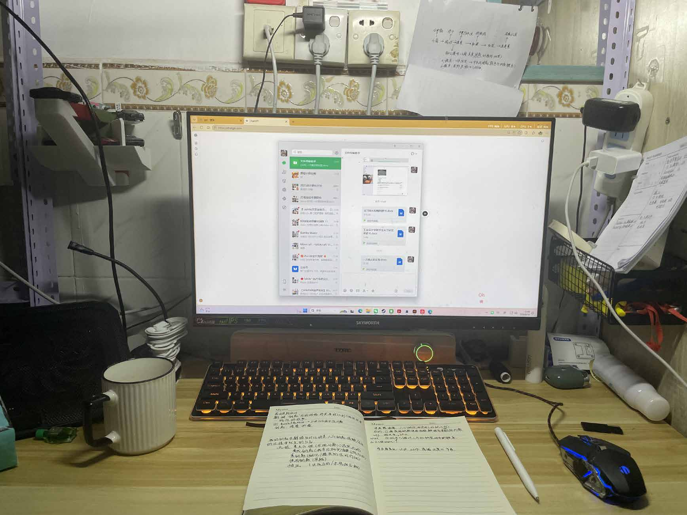
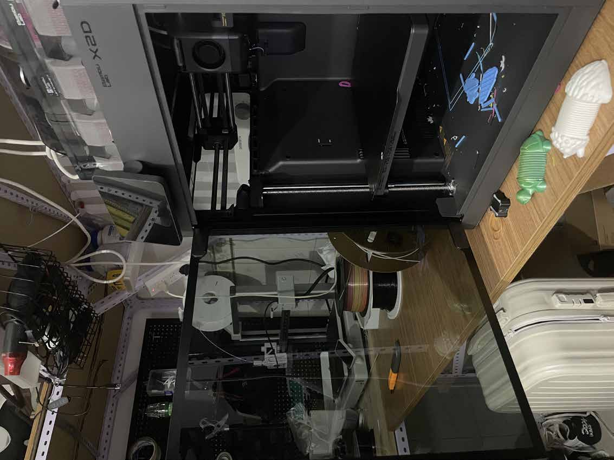

空间记录法
我用照片记录出租屋中每一块空间的原始状态——桌面、床底、墙角、门后、厨房台面。不整理、不摆拍，只拍下日常使用后的真实模样，作为第一手分析素材。
Spatial Research Method
我用照片记录出租屋中每一块空间的原始状态——桌面、床底、墙角、门后、厨房台面。不整理、不摆拍，只拍下日常使用后的真实模样，作为第一手分析素材。
我记录一天中在出租屋里走动的路线：起床→洗漱→拿衣服→吃早餐→找充电线→出门→回家→放东西→坐下。每一条动线都揭示空间中的“关键节点”——那些会停下来、放东西、找东西的地方。
我把出租屋里的所有物品按类别列出：衣物、书籍、数码设备、厨房用具、洗护用品、囤货、杂物。然后再标注它们各自被放在哪里、多久用一次、是否经常移动。
哪些地方经常变乱？什么东西没地方放？什么场景下会觉得“空间不够”？我把这些冲突点在地图上标记出来，作为收纳产品设计的问题出发点。
Key Findings
大多数物品被水平堆放——桌面、地面、床面成为默认的“储物平台”。一旦水平面占满，空间立刻显得拥挤。垂直空间（墙面、门后、高处）大量闲置。
同一张桌子同时承担工作、吃饭、储物三种功能，但没有任何功能分区。每当切换用途时，需要把上一层的物品移开，形成重复的清理动作。
每天都要用的东西（手机、钥匙、耳机、充电器）反而最容易没有固定位置，最终沉到桌面或沙发缝隙里。找东西的时间成本被严重低估。
因为住的是出租屋，大多数人不想投入固定收纳方案。结果是大量使用纸箱、塑料袋和临时堆放，进一步加剧了空间混乱和视觉噪音。
Space Analysis
使用频率最高的区域，也是最容易变成杂物的中转站。电脑、书籍、水杯、零食、快递、票据全部争抢同一块平面。需要一种“快速清空/快速恢复”的收纳机制。
衣柜空间不足时，椅背、床尾、晒衣架成为次优选择。穿了一次还不洗的衣服没有合理过渡区。需要“半洁净衣物”的专属收纳方案。
钥匙、口罩、门卡、快递刀、雨伞——所有出门/回家瞬间需要拿放的东西挤在门口鞋柜或挂钩上。这是收纳的第一触点，也是最容易被忽视的“高频动作区”。
出租屋厨房台面极小，调味料、厨具、餐具、囤货相互挤压。日常只用一个锅和一副碗筷，但所有物品都被保留。需要“小空间精简配置”的逻辑。
床不仅是睡觉的地方，也变成了衣服临时堆放区、睡前阅读区、手机充电区。床周围30cm内的收纳决定了每天的整理负担。
Design Principles
出租屋最被浪费的资源是垂直空间。墙面、柜门侧面、床沿上方都是未被使用的领地。好的收纳产品应该帮助用户“向上生长”，把水平堆积转化为垂直分层。
出租屋的空间配置经常变化——搬家、换房、调整布局。收纳产品不能是一次性固定安装，而应该是可拆解、可重组、可携带的模块系统。
每天使用的物品应该拥有最便捷的存取位置，而不是被塞进柜子深处。收纳设计应该按照“使用频率”而不是“物品类别”来组织空间层级。
同一空间的不同用途需要被清晰地暗示和区隔。不是用实体墙，而是通过收纳单品的布局来划分“工作区”“进食区”“放松区”的心理边界。
From Key To Space
Key Logic In Storage
前三周我把钥匙拆解为结构、语义和产品方向，发现钥匙的核心是“让封闭变为开放”。第四周我回到真实空间后发现，收纳行为的本质也是“解域”——把被杂物封闭的空间重新打开，让物品可以被看见、被拿到、被放回。
钥匙齿牙与锁芯的匹配关系，对应收纳产品与空间尺寸的匹配；钥匙挂在固定位置的归位动作，对应收纳中“物归原处”的习惯；钥匙转动时的确认手感，对应收纳产品闭合时令人满足的反馈。
所以这一周的研究看似从钥匙转向了空间，但实际上是用钥匙的逻辑在看空间——每一平米都是一把锁，收纳产品就是打开它的钥匙。
Field Photos





Next Steps
设计一个针对钥匙、口罩、门卡、快递刀等出门高频物品的壁挂系统，让出门动作变成一条流畅的“取出-使用-归位”链条。
用模块化托盘和立架重新组织桌面空间，让工作区、饮食区和囤货区有明确的物理边界，切换时不需要清理。
设计一组可自由组合的壁挂模块，利用墙面和柜门侧面创造新的收纳维度，解决平面化堆积的核心矛盾。
为穿过一次还不洗的衣物提供独立的挂放区，减轻椅背和床尾的侵占压力。
一个可移动的小型收纳单元，具有桌面和抽屉功能，在不同使用场景间灵活切换。
Week 04 Conclusion
第四周的调研让我从“钥匙的概念分析”回到“真实空间中的钥匙行为”。收纳的本质是解域——把被物品封闭的空间重新打开。出租屋的空间问题不是面积不够，而是缺乏对使用行为的观察和对应的收纳策略。
这周把研究的焦点从“钥匙是什么”拓展到“钥匙在哪里被使用”——为后续五、六周的收纳产品设计提供了真实的需求基础和空间依据。
Original PDF
PDF 中包含完整的空间记录照片、动线分析、物品清单和冲突标记，是后续设计的原始数据依据。